Вічна земля, Амфореус - грабельний світ і локація в Honkai: Star Rail . Він прихований від інших світів і його можна побачити лише крізь дзеркало Саду спогадів . Також за словами Чорного Лебедя Амфореус це світ, схильний до впливу трьох Шляхів , Ерудиція , Пам'ять і Руйнування. Насправді Амфореус - симульований світ у скіпетрі δ-me13 , який перебуває у стані постійного циклу.
ГЕРОЇ АМФОРЕУСУ
Аглая
У цьому священному місті, світанком укутаному, ткач ніжно погладжує золоті нитки, пов'язуючи долі. Аглая «Золота пряжа», одна із Золотих нащадків, чиє ядро полум'я — Романтика. Потрібно зібрати героїв цього світу і знову вирушити з ними у нескінченну подорож. Вони скинуть богів, повернуть священне полум'я і відродять Амфореус, що вмирає. Поліс: Охема Божественна влада: Золотий Кокон Мнесення.
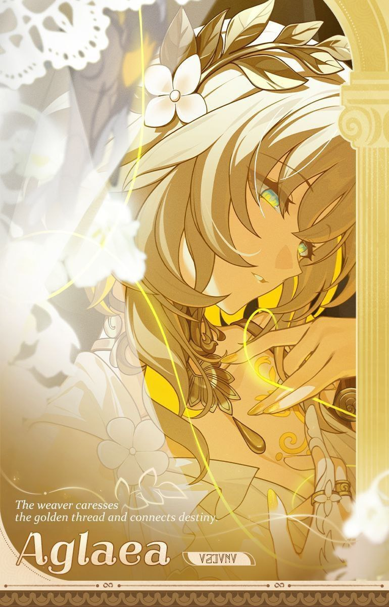
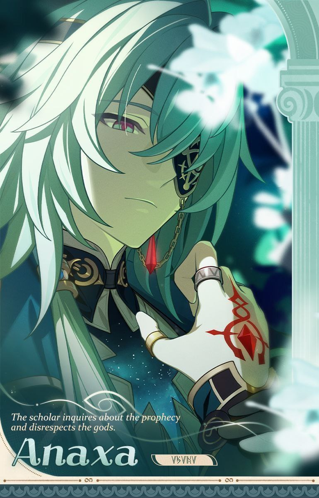
Анакса
Гай муз , обитель знань і колиска, що вирощує філософів. Але богохульний златіус Анаксагор запитує ядро полум'я розуму. Невже ти готовий прийняти ганьбу, заперечуючи пророцтво, і встромити шипи сумніву в священне дерево мудрості? - «Смішно. Цей світ сповнений брехні, і тільки я є істиною».
Мідей
Кремнос, що потонув у тумані, місто хаосу і воєн! Його королівська кров поєднується з кров'ю батьковбивці. Його бог носить ім'я лиха. О безсмертний Мідеймос, лев без прайда, златіус, що полює на ядро полум'я розбрату. Ти переживеш тисячі смертей, повернешся додому в крові і будеш самотньо нести безумство своєї долі, бо треба вбити короля, щоб стати королем, треба вбити бога, щоб стати богом. Залізні підкови війни потопчуть пустки та затоплять кров'ю твої рідні місця.
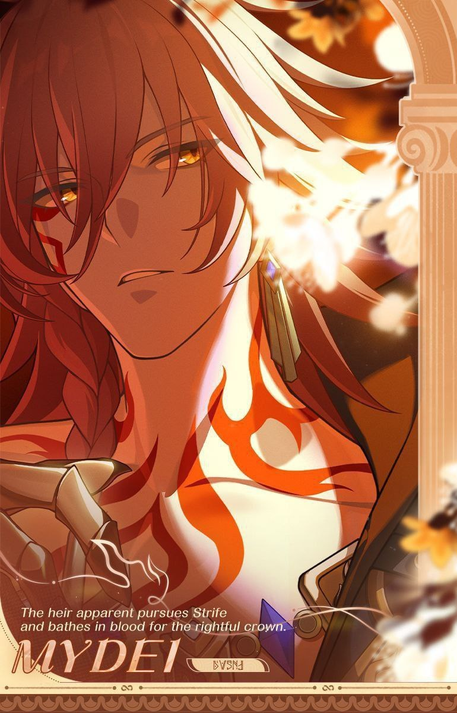
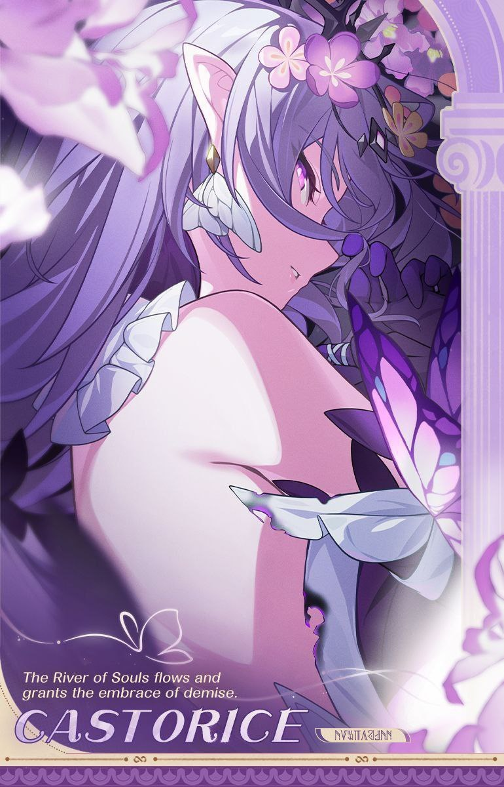
Касторія
Слуга смерті: Касторія Край, що схиляється перед смертю, Айдонія , де вічно кружляє сніг, нині занурений у солодкий спокій. Дочка Річки душ Касторія, златіус , що шукає ядро полум'я «смерті», вирушай у дорогу. Ти маєш оберігати скорботу душ світу і тримати в обіймах самотність долі. — Життя і смерть — лише подорож. Коли метелик сяде на гілку, зів'яле народиться знову.
Гіацина
Поліс у хмарах зруйнувався з часом, Сутінковий двір знову відчинив свої ворота, приносячи проблиск світла у вічну ніч. Лікарка Гіацинтія, златіус, що зберігає ядро полум'я неба. Тобі належить успадкувати волю предків і залатати розрив між світанком та заходом сонця. Хай проллється райдужне світло, зникне ворожнеча, і зоря знову повернеться на землю.
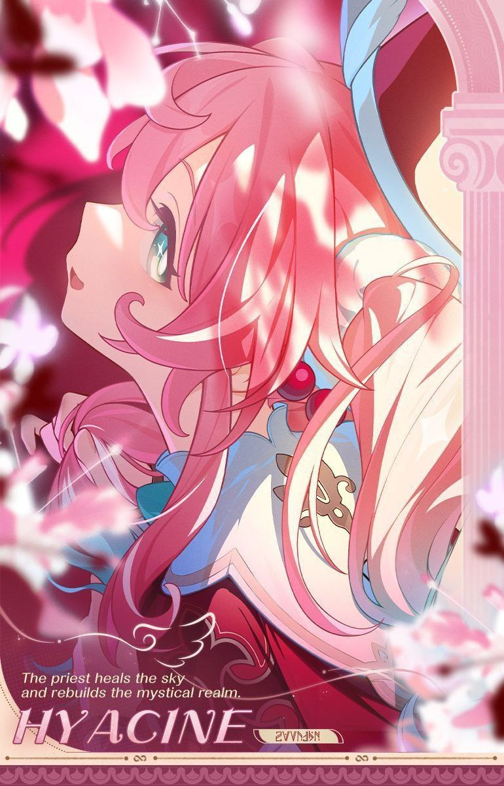
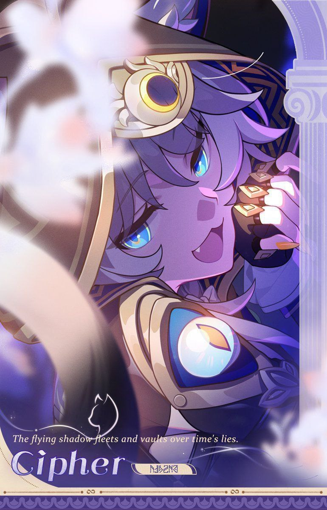
Цифер
Спритна мандрівниця: Цифера У Долосі, загубленому бандитському полісі, буяють і бавляться три сотні злодіїв. Біжи, швидконога злодійська зірка Цифера, златіус, дражнячий ядро полум'я підступності. Нехай твоя брехня летить з вітром, розносячись по всіх землях цього світу. «Хе-хе, хочеш обдурити мене? Не вийде!
Тріббі
Зі святої землі потрійного пророцтва посланка, поділена на тисячі тіл, вирушає у подорож. О діви Янусополіса, Трібіос, златіуси, що вкрали ядро полум'я брами. Ви повідомите про спасіння всім живим істотам. Знайдіть синів людських, у венах яких тече золота кров, і прорвіться крізь темряву цього світу до світлого майбутнього.
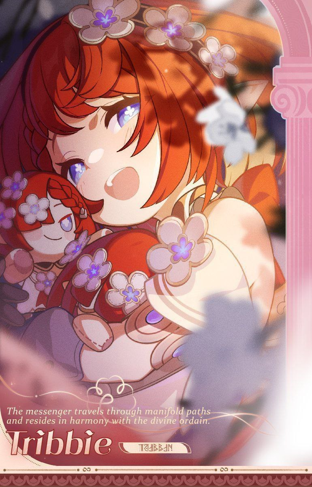
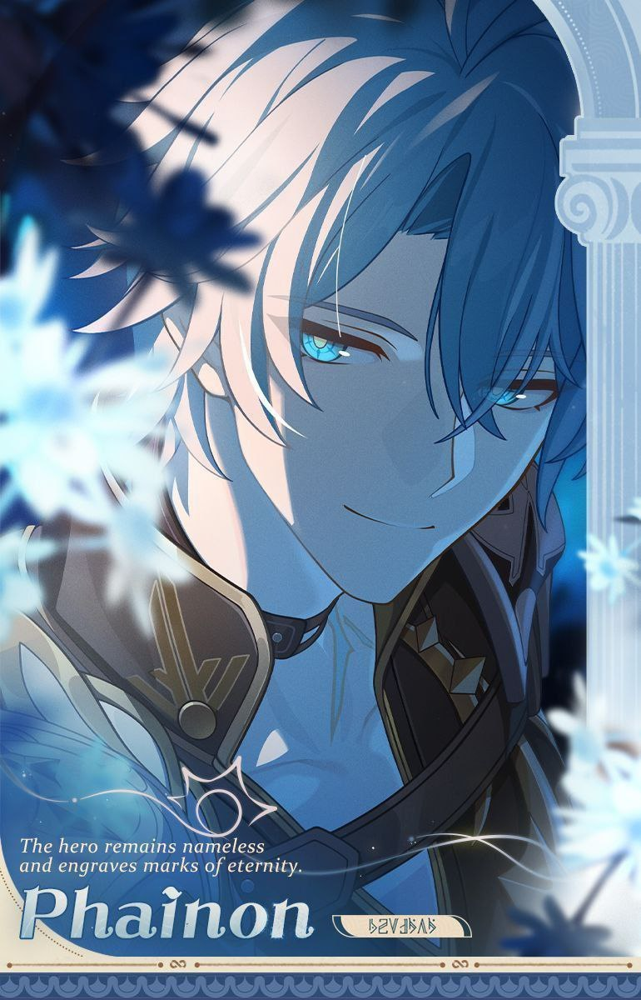
Фаєнон
Безіменний герой: Фаєнон Елізія Ейдес , ізольоване село на краю світу, тепер залишилося лише в туманних легендах. Безіменний герой █████, златіус , що володіє ядром полум'я опори світу, ти повинен пам'ятати про ідеали і нести на своїх плечах долі людей, щоб перші промені світанку осяяли новий світ — «Але якщо світанок ніколи не настане, нехай лють спалить моє тіло!
Дань Хен
Розколота земля тримається на грудях Георіоса та тілі дракона, тисячоліття приносячи їм страждання. Безіменний Дань Хен, златіус , що захищає ядро полум'я землі, убережи світ від руйнування і спрямуй земних істот у новий будинок. ...Всі річки впадають у море, гори звучать в унісон, а шлях Постійності тягнеться в нескінченність.
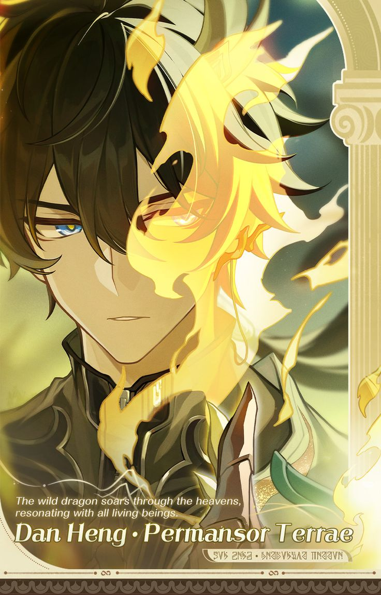
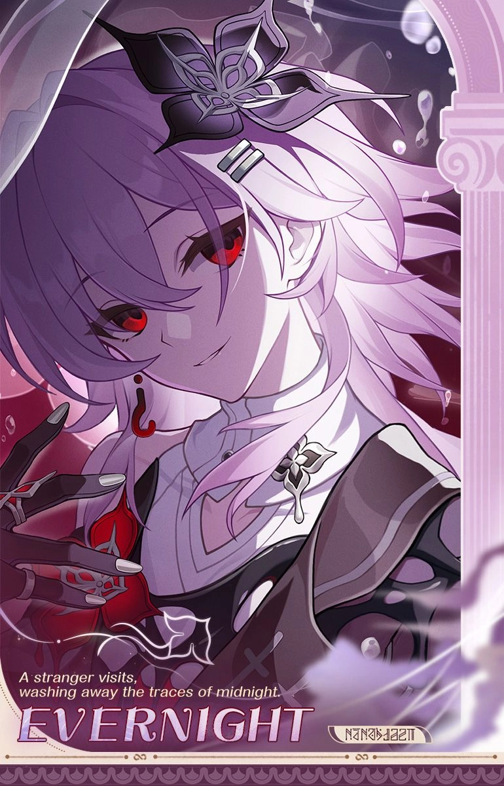
Темінь
У відокремленій від світу зоні спогадів світло свічки відбиває минуле і тихо гасне в тумані. Темінь, дитя Пам'яті з тіні, златіус , що приховує ядро полум'я часу, ти повинна підняти хвилю забуття, захищаючи бажання тієї, що в дзеркалі. «Не турбуйся, я охоронятиму шлях твого Освоєння ... за будь-яку ціну »
Гісіленса
Стиксія , прибережне місто мрій і хмелю, де серед хвиль все ще віддаються відгуки старовинних пісень. Дочка моря Гелектра, златіус , що очистила ядро полум'я океану, ти повинна позбутися каламутної течії і влаштувати для героїв з-за меж неба великий бенкет. — Поки не настав час розлучатися, навіть якщо надія розсипається, як морська піна, хвилі невпинно котитимуться вперед.
.png)
.png)
Керідра
Північна Імперія , втрачена династія, в холодних землях якої палає жага до завоювань. Володарка Керідра, златіус , що володіє ядром полум'я правосуддя, ти повинна розставити постаті, зіграти партію з богами, винести вирок відступникам і закласти основу для полум'я. «Це не кінець. Шлях Амфореуса лежить до зірок!
Кірена
Метеор розтинає нічне небо, малюючи бриж на блискучій тринадцятьма відтінками річці життя. Дочка Елізії Ейдес, златіус , що вирощує «██», посади насіння Пам'яті, щоб квіти минулого розцвіли в майбутньому дні. ...А тепер давай разом напишемо вірші, подібним до яких ще не було ♪
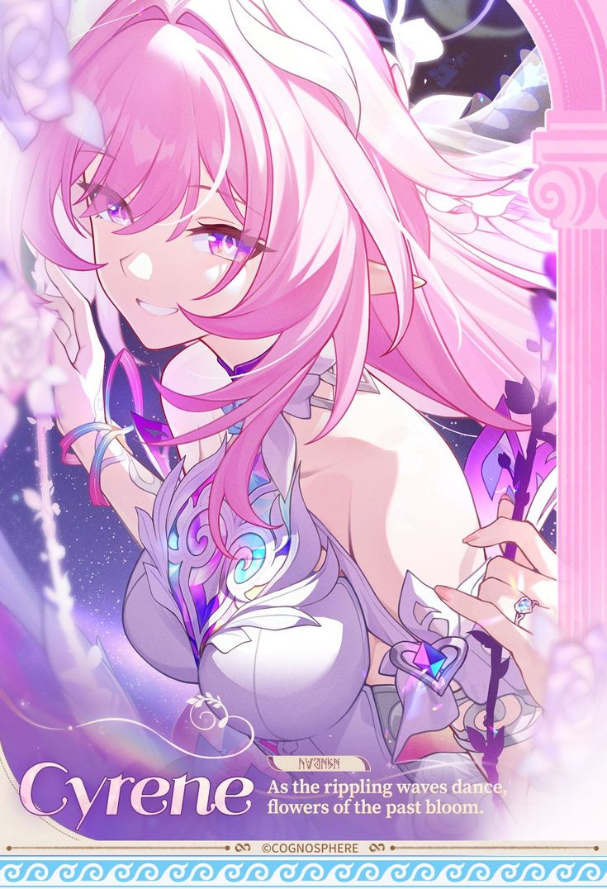